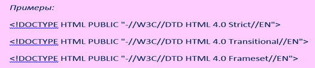

Модуль 3 Оформление веб-страниц. HTML
Глава 1 Структура документа – заголовок и тело
Для того, чтобы опубликовать в Интернете страницу, содержащую некоторую информацию, используется специально разработанный для этого язык HTML. HTML – HyperText Markup Language (Язык разметки гипертекста) представляет собой довольно простой набор команд, описывающих структуру документа [1].
Любой HTML-документ состоит из трех частей:
Строки, содержащей информацию о версии HTML;
Блока заголовка документа;
Тела документа, содержащего либо непосредственно отображаемую информацию, либо определяющего набор фреймов.
Вторая и третья части должны быть вложены в контейнер HTML. При этом указывать явно контейнеры для документа, его заголовка и тела нет надобности: если они опущены, подразумевается, что браузер сам определит, где что находится. Поэтому и открывающие и закрывающие теги для этих элементов отмечены как опциональные. Тем не менее, «правила хорошего тона» требуют, чтобы эти теги все-таки присутствовали.
Информация о версии – !DOCTYPE
Любой действительный документ HTML должен содержать информацию о версии языка HTML, используемого в документе. Существуют три типа документов:
1. HTML 4.0 Strict – такой документ не должен содержать отмененных элементов и атрибутов, и не должен быть контейнером для фреймов.
2. HTML 4.0 Transitional – более «мягкое» определение. Может содержать все то, что и HTML 4.0 Strict, а также отмененные элементы и атрибуты.
3. HTML 4.0 Frameset – указывает на то, что данный документ является контейнером для набора фреймов.
Описание технологического процесса обработки данных и его составных компонент посредством словесной и графической моделей, анализ этой информации и соотнесение с теоретическими сведеньями технологических процессов.

Дополнительно может быть указан также файл, содержащий DTD – document type definition (определение типа документа) для данного типа.
Закрывающий тег: не имеется, атрибутов не имеется.
Элемент HTML
После строки с информацией о версии, весь остальной документ должен быть заключен в контейнер HTML. Текст, помещенный вне этого элемента, может игнорироваться браузером.

Закрывающий и открывающий теги: опционально.
Собственные атрибуты:
VERSION – указывает версию HTML. Отменен. Необходимо использовать !DOCTYPE.
Общие атрибуты:
LANG – информация о языке.
DIR – направление текста.
Элемент HEAD
Данный элемент содержит информацию о текущем документе, такую, как заголовок, ключевые слова, и иную информацию, которая не должна отображаться в документе. Браузеры не отображают информацию, помещенную в контейнер HEAD, однако могут ее использовать для каких-либо иных целей.
Закрывающий и открывающий теги: опционально.
Собственные атрибуты:
PROFILE – указывает расположение одного или нескольких файлов, содержащих определения META.
Общие атрибуты:
те же: LANG и DIR
Элемент TITLE
Каждый действительный документ HTML должен иметь элемент TITLE в части HEAD. Этот элемент используется для определения содержания документа. Большинство браузеров отображают строку, размещенную внутри элемента TITLE в качестве заголовка окна.
Закрывающий тег: необходим.
Общие атрибуты: LANG и DIR.
Элемент META
Данный элемент используется для включения различной информации о документе, а также предоставляет возможность сообщать дополнительные инструкции как клиентской части (браузеру), так и серверной.
Например, чтобы указать автора документа, используется следующая конструкция:

В данном случае определяется свойство (автор), которому присваивается значение (Алексей Петров). Вы можете определять любые свойства и присваивать им любые значения. Вместе с тем, ряд свойств являются общепринятыми:
- • Author – автор документа;
- • Copyright – информация об авторском праве;
- • Description – описание документа (для поисковых машин);
- • Generator – название программы, с помощью которой создавался документ;
- • Keywords – ключевые слова (для поисковых машин).
Закрывающий тег: нет.
Собственные атрибуты:
- • NAME – определяет имя свойства (см. выше).
- • CONTENT – определяет значение для свойства.
- • SHEME – определяет схему для обработки CONTENT браузером.
- • HTTP-EQUIV – может быть использован вместо NAME для указания инструкций серверу. Например:

Такая строка указывает, что в документе содержится текст в формате HTML.
Дополнительно может быть указана и кодовая страница:

Также как и атрибут NAME, атрибут HTTP-EQUIV имеет ряд общепринятых свойств. К ним относятся:
- • Refresh – данное свойство поддерживается большинством браузеров и заставляет их перегружать документ по истечении интервала времени, указанного в секундах.
- • Expires – указывает дату, после которой документ становится устаревшим. Заставляет браузер явно загрузить документ из сети, а не из кэша.
- • Content-type – указывает на тип файла.
- • Content-style-type – указывает на тип применяемых таблиц стилей

В данном случае страница будет обновляться каждую минуту.

Через 5 секунд после загрузки текущего документа будет загружен другой, расположенный по указанному адресу (URL). Такое применение Refresh чаще всего используют, например, при «переезде» сайта.
Если вставить уже прошедшую дату, то документ всегда будет загружаться непосредственно из сети.
Общие атрибуты:
LANG и DIR.
Элемент BODY
Контейнер BODY включает в себя все содержимое документа, которое должно быть представлено пользователю. Если документ является контейнером для фреймов, то он не должен содержать элемента BODY.
Закрывающий тег: опционально.
Собственные атрибуты:
- BACKGROUND – Отменен. Указывает URI графического изображения, используемого в качестве фона.
- BGCOLOR – Отменен. Указывает цвет фона.
- TEXT – Отменен. Указывает цвет текста.
- LINK – Отменен. Указывает цвет ссылок.
- ALINK – Отменен. Указывает цвет ссылок в момент щелчка по ним мышкой.
- VLINK – Отменен. Указывает цвет посещенных ссылок.

Для создания более корректного HTML-документа необходимо использовать таблицы стилей:

Общие атрибуты:
- ID, CLASS – идентификаторы элемента;
- LANG – информация о языке;
- DIR – направление текста;
- TITLE – заголовок элемента;
- STYLE – встроенная информация CSS;
- ONLOAD, ONUNLOAD – события, происходящие при загрузке и выгрузке документа;
- ONCLICK, ONDBLCLICK, ONMOUSEDOWN, ONMOUSEUP, ONMOUSEOVER, ONMOUSEMOVE, ONMOUSEOUT, ONKEYPRESS, ONKEYDOWN, ONKEYUP – события, происходящие во время работы пользователя с документом.
Группирующие элементы – DIV и SPAN
Все элементы, располагающиеся внутри BODY, подразделяются на «элементы уровня блока» и «встроенные элементы», или «элементы уровня текста». Их различие заключается в следующем:
1. Элементы уровня блока могут содержать внутри себя как встроенные элементы, так и другие элементы уровня блока.
2. Как правило, вывод элементов уровня блока начинается с новой строки.
Элемент DIV относится к элементам уровня блока, а SPAN – к встроенным. Оба они применяются для форматирования соответствующей части документа с использованием таблиц стилей.

Закрывающий тег: требуется.
Собственные атрибуты:
ALIGN (только для DIV) – Отменен. Задает выравнивание блока. Может принимать значения:
- • Center – выровнять по центру.
- • Left – выровнять по левому краю.
- • Right – выровнять по правому краю.
- • Justify – выровнять по ширине.
Общие атрибуты:
- ID, CLASS – идентификаторы элемента.
- LANG – информация о языке.
- DIR – направление текста.
- TITLE – заголовок элемента.
- STYLE – встроенная информация CSS.
- ONCLICK, ONDBLCLICK, ONMOUSEDOWN, ONMOUSEUP, ONMOUSEOVER, ONMOUSEMOVE, ONMOUSEOUT, ONKEYPRESS, ONKEYDOWN, ONKEYUP – события, происходящие во время работы пользователя с документом.
Элементы H1, H2, H3, H4, H5, H6
Элементы заголовка служат для выделения названия разделов документа. Существует шесть уровней заголовка. Чем меньше число, указывающее уровень, тем более значимым является заголовок. Иначе говоря, H1 указывает на самую главную тему, а H6 – на наименее значимую.

Таким образом, можно наглядно создавать иерархическую структуру документа.
Закрывающий тег: требуется.
Атрибуты: те же самые, что и у SPAN.
Глава 2 Фреймсодержащие документы
Помимо обычных HTML-документов, существуют также и фреймсодержащие. В отличие от обычных документов, они не содержат никакой информации для предоставления пользователю, а служат для разделения рабочей области браузера на несколько отдельных окон, в которые загружаются содержащие информацию документы. Фреймсодержащий документ не имеет тег BODY, он заменяется тегом FRAMESET. Например, если файл index.html является контейнером для двух вертикальных фреймов, в котором элементы FRAME ссылаются на файлы left.html и right.html, то браузер разобьет экран вертикально на две части и загрузит в них эти два файла.
Элемент FRAMESET
В элементе FRAMESET определяется набор создаваемых фреймов и их расположение в окне браузера.

В этом примере определяется набор из трех фреймов, на первый из которых отводится столбец шириной в 25% окна, на второй шириной в 200 пикселей, а на третий – все оставшееся место.
Закрывающий тег: требуется.
Собственные атрибуты:
- COLS – задает расположение фреймов по горизонтали. Может принимать значения в пикселях, процентах, либо в относительных указателях. Значения перечисляются через запятую.
- ROWS – Задает расположение фреймов по вертикали. Может принимать значения в пикселях, процентах, либо в относительных указателях. Значения перечисляются через запятую.
Общие атрибуты: ID, CLASS, TITLE, STYLE
ONLOAD, ONUNLOAD
Дополнительные атрибуты:
- BORDER – указывает толщину рамки для всех фреймов в наборе, указывается в пикселях.
- BORDERCOLOR – указывает цвет рамки.
- FRAMEBORDER – указывает, выводить объемную рамку, или плоскую. Если указано 1 (для MS IE) или Yes (для NetScape), то рисуется объемная рамка.
Элемент FRAME
Элемент FRAME определяет содержимое каждого конкретного фрейма. Он всегда должен быть вложенным в контейнер FRAMESET.

Здесь указывается, что в первый фрейм из набора фреймов, заданного элементом FRAMESET, должен быть загружен файл my_file.html.
Закрывающий тег: нет.
Собственные атрибуты:
NAME – задает имя фрейма. Имя фрейма используется для создания ссылок между фреймами (при помощи атрибута TARGET элемента A), а также используется в сценариях JavaScript. Например, если окно браузера разбито на два фрейма, первый из которых носит имя “topic”, а второй – “work”, то при нажатии по ссылке в документе, загруженном в фрейме “topic”, с указанным TARGET=”work”, новый документ будет загружен во второй фрейм.

А так же:
- SRC – содержит адрес загружаемого во фрейм документа. Обязательный атрибут.
- LONGDESC – содержит URI документа с описанием того, что должно загрузиться при помощи атрибута SRC. Например, если SRC ссылается на рисунок, а пользователь просматривает страницу текстовым браузером, то вместо него будет загружен файл, указанный в этом атрибуте.
- NORESIZE – указывает браузеру, что пользователь не может изменять размеры фрейма. Если этот атрибут не указан, то у пользователя есть возможность изменять размер фрейма.
- SCROLLING – указывает браузеру, можно или нет создавать полосу прокрутки. Может принимать следующие значения:
- • Auto (принято по умолчанию). Полоса прокрутки появляется только в том случае, если документ целиком не помещается во фрейме.
- • Yes. Полоса прокрутки будет в любом случае.
- • No. Полоса прокрутки всегда отсутствует. Будьте осторожны, устанавливая SCROLLING=”No”, поскольку вполне возможно, что при малом разрешении экрана пользователь просто не увидит части страницы.
- FRAMEBORDER – указывает, выводить или нет рамку данного фрейма. Если указано 1 (для MSIE) или YES (для Netscape), то рамка рисуется. Эти значения приняты по умолчанию. Чтобы скрыть рамку, для Netscape следует указывать NO, а для MSIE – 0. Оба браузера понимают как «свои», так и «чужие» значения.
- MARGINWIDTH – указывает ширину отступа слева и справа в пикселях между границей фрейма и собственно его содержимым.
- MARGINHEIGHT – указывает высоту отступа сверху и снизу в пикселях между границей фрейма и собственно его содержимым.
- BORDERCOLOR – указывает цвет рамки отдельного фрейма.
Элемент NOFRAMES
В случае если браузер не поддерживает фреймы, можно предусмотреть альтернативное содержание документа-контейнера фреймов. Для этого после определения набора фреймов элементом FRAMESET в документ вставляется элемент NOFRAMES, внутри которого размещают либо альтернативное содержание, либо пояснительный текст.

Закрывающий тег: требуется.
Атрибуты: нет.
Элемент IFRAME
Элемент IFRAME позволяет встроить один документ в другой наподобие матрешки. Такие фреймы известны под названием плавающих. До последнего времени они были мало распространены, поскольку поддерживались не всеми браузерами.

В данном примере создается встроенный фрейм размером 250х250 пикселей, в который будет загружен файл new.html.
Закрывающий тег: требуется.
Собственные атрибуты:
- ALIGN – Отменен. Задает выравнивание окна фрейма.
- SRC – Содержит адрес, загружаемого во фрейм, документа. Обязательный атрибут.
- NAME – Задает имя фрейма. Имя фрейма используется для создания ссылок между фреймами и в сценариях JavaScript.
- WIDTH – ширина фрейма в процентах от ширины родительского окна или в пикселях.
- HEIGHT – высота фрейма в процентах от высоты родительского окна или в пикселях.
- SCROLLING – указывает браузеру, можно или нет создавать полосу прокрутки.
- FRAMEBORDER – указывает, выводить или нет рамку данного фрейма. Если указано 1, то рамка рисуется. Это значение принято по умолчанию.
- MARGINWIDTH – указывает размер горизонтального отступа в пикселях между границей фрейма и его содержимым.
- MARGINHEIGHT – указывает размер вертикального отступа в пикселях между границей фрейма и его содержимым.
Глава 3 Ссылки
Как уже отмечалось ранее, ссылки – это основа гипертекста. Именно наличием ссылок HTML отличается от иных языков разметки, например, от PostScript. Ссылки состоят из двух частей – вызывающей (источника) и направления, или места назначения. Таковым может быть другой гипертекстовый документ, графический файл, архив, видео файл или какой-либо элемент внутри гипертекстового документа.
В языке HTML для создания гиперссылок используются элементы A, LINK и BASE.
Элемент A
Элемент А, или якорь, служит для создания ссылок. В зависимости от того, с каким атрибутом этот элемент используется, он будет являться либо источником, либо местом назначения:
1. Если указан атрибут HREF, то элемент А является источником, или, как это чаще называют, самой ссылкой.
2. Если указан атрибут NAME, то элемент А является назначением для произвольного числа ссылок.

Закрывающий тег: требуется.
Собственные атрибуты:
- NAME – присваивает уникальное имя ссылке и указывает, что данный элемент А является пунктом назначения для других ссылок.
- HREF – задает адрес ресурса, на который должен перейти пользователь, нажав на гиперссылку. Этот атрибут может указывать как на внешний документ, так и на какой-либо пункт назначения внутри данного документа (заданного при помощи NAME).
- HREFLANG – указывает язык, на котором составлен документ-назначение. Может использоваться только вместе с HREF.
- TYPE – указывает на тип содержимого документа-назначения, например, text/html.
Элемент LINK
Этот элемент определяет ссылку. В отличие от элемента А, элемент LINK может располагаться только в части заголовка (HEAD) документа. Информация, указанная в элементе LINK может по-разному обрабатываться браузерами, в зависимости от указанных атрибутов.

Закрывающий тег: нет.
Собственные атрибуты:
- HREF – задает адрес ресурса, на который указывает данная ссылка.
- HREFLANG – указывает язык, на котором составлен документ, указанный в HREF. Может использоваться только вместе с HREF.
- TYPE – указывает на тип содержимого документа-назначения, например, text/css.
- REL – указывает отношение текущего документа к документу, на который ссылается атрибут HREF.
- REV – указывает отношение документа, указанного в атрибуте HREF к текущему документу.
Элемент BASE
В языке HTML все ссылки должны быть определены в виде URI. Они бывают как абсолютными – http://www.mail.ru/user315/file.html, так и относительными – ../index.html. Элемент BASE позволяет указать базовый URI для всех ссылок в документе, например, http://www.mail.ru. При этом, если в документе попадется «неправильная» ссылка, то при ее активизации будет загружен документ, указанный в атрибуте HREF элемента BASE.

Здесь относительная ссылка на ../logo.gif будет преобразована в http://www.mail.ru/logo.gif.
Закрывающий тег: нет.
Собственные атрибуты:
HREF – указывает базовый URI для всех относительных ссылок в документе.
Глава 4 Стили форматирования CSS
Для форматирования документов предназначен язык CSS. В файлах CSS создаются классы, каждый из которых содержит свой набор стилей, применяемых к тексту, прописанному в html-файлах:

В файле html есть теги, в которые заключен текст, отображаемый на экране. В качестве атрибутов такого тега прописывается имя класса, соответствующего набору стилей, преписываемых тексту.

Список используемых источников